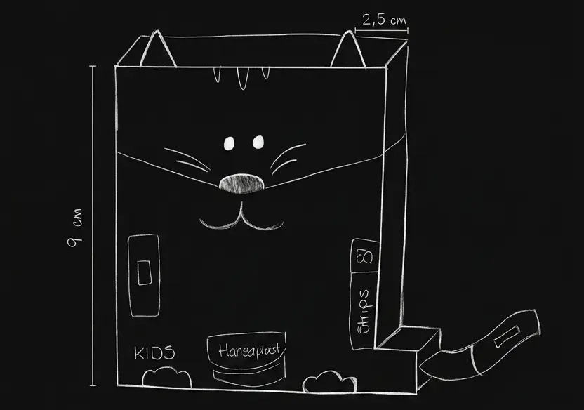
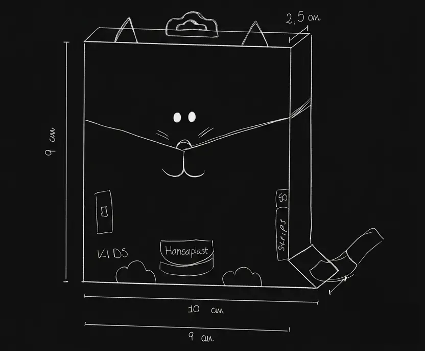
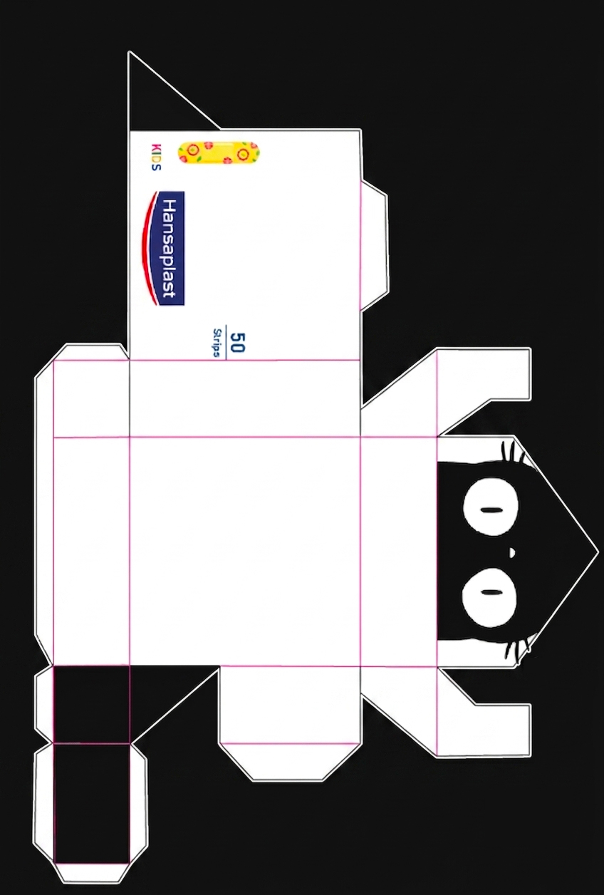
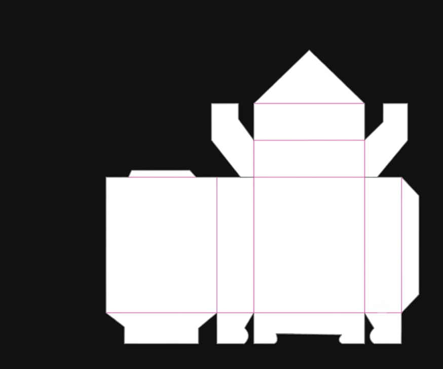
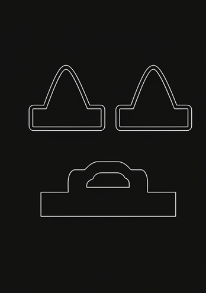
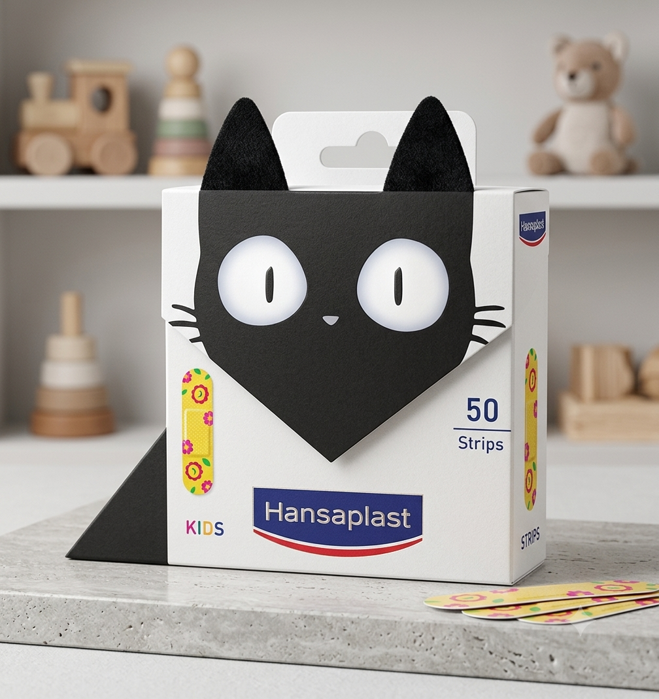

← Back to Work
Hansaplast Kids
Packaging Design · Visual
Hansaplast Kids
Packaging
Reimagining children's bandage packaging through play, interaction, and shelf impact.
Reimagining children's bandage packaging through play, interaction, and shelf impact.
Hansaplast Kids bandages are designed to make a small medical moment feel less intimidating for children. The product itself is colourful and playful, but the packaging follows a more conventional medical format. This created an opportunity to bring the personality of the product into the packaging itself.
The challenge was not simply to redesign the graphics, but to rethink the packaging as part of the product experience. The goal was to create something that could feel more engaging to children while still communicating the trust and clarity expected from a healthcare brand.
How might we design a packaging experience that feels as playful as the product itself?
I looked at the existing Hansaplast Kids range, competing children's healthcare products, and packaging structures to understand how the category communicates with both children and parents. The research focused on:
The main opportunity was clear: the packaging could do more than contain the product, it could become part of the experience.
The concept transforms the packaging into an interactive object inspired by animals. Instead of treating the box as a simple container, the structure becomes part of the visual story, with the bandages interacting with the illustrated character. The idea was to create a moment of discovery: something children can look at, interact with, and connect with beyond the functional purpose of the product.


The packaging was developed from custom dielines in Adobe Illustrator, exploring how the physical structure could support the concept while remaining practical and stable. The design introduced:
The structure and visual design were developed together, rather than treating the packaging shape as a separate step from the graphic design.



The visual direction balances the playful character of the concept with the clarity and credibility expected from Hansaplast. Bright colours, simple shapes, and a clear visual hierarchy create a more expressive experience while keeping the product and brand immediately recognisable. The illustrations and packaging structure work together to give the product a stronger presence both in the hand and on the shelf.
The final concept reimagines children's bandage packaging as more than a container. Through the combination of structure, illustration, colour, and interaction, the packaging becomes part of the product experience. The project explores how a relatively small physical touchpoint can create a stronger emotional connection while maintaining the clarity and trust associated with a healthcare brand.

This project reminded me that the principles I use in digital design can also shape physical experiences. Thinking about interaction, hierarchy, usability, and the user's journey is just as relevant when the interface is a piece of packaging rather than a screen. It also pushed me to think more holistically about design: the structure, visual language, and interaction all need to work together to make the idea feel complete.